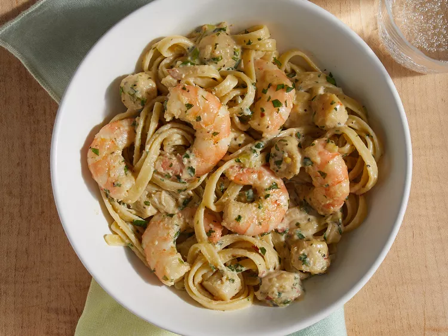

Pasta
This delicious seafood pasta dish with shrimp, scallops, and fettuccine pasta is creamy, spicy, and full of flavor! Bay scallops are preferred, but the larger sea scallops can be used if they are cut in half.
Ingredients
- 1 pound dry fettuccine pasta
- 2 cups heavy whipping cream
- 1 cup chopped green onions
- 1 cup chopped parsley
- 1 tablespoon chopped fresh basil
- 1 tablespoon chopped fresh thyme
- 2 teaspoons salt
- 2 teaspoons ground black pepper or to taste
- 1 ½ teaspoons crushed red pepper flakes or to taste
- 1 teaspoon ground white pepper or to taste
- ½ pound shrimp, peeled and deveined
- ½ pound scallops
- ½ cup shredded Swiss cheese
- ½ cup grated Parmesan cheese
Directions
- Bring a large pot of lightly salted water to a boil. Add fettuccine and cook for 8 to 10 minutes or until al dente; drain.
- Meanwhile, in a large saucepan, combine cream, green onions, parsley, basil, thyme, salt, and peppers. Bring to a simmer over low heat, stirring frequently. Stir in seafood, and cook over low heat for 5 minutes.
- Stir in Swiss cheese and 1/4 cup Parmesan cheese until melted. Toss with pasta until evenly coated. Sprinkle with remaining Parmesan cheese.
